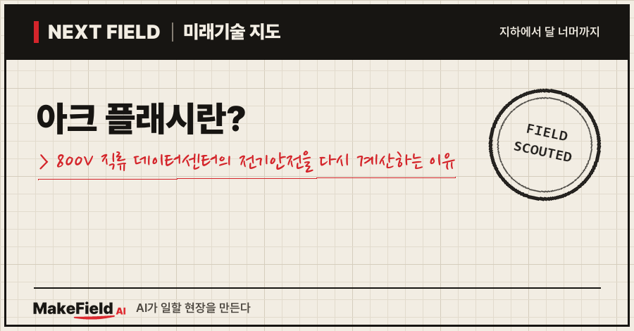
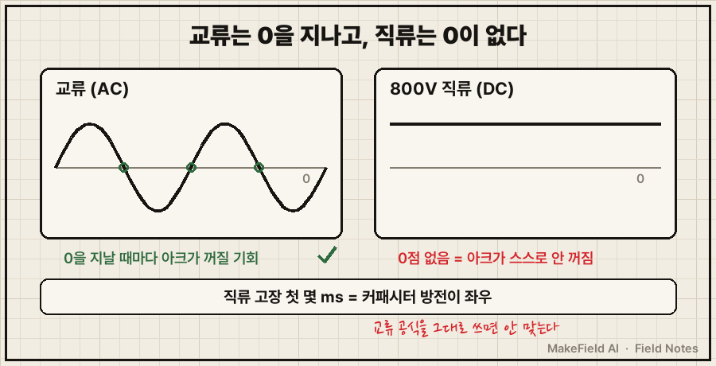
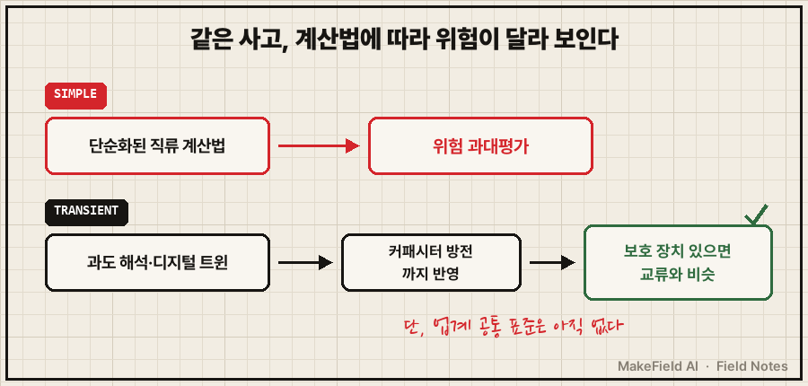
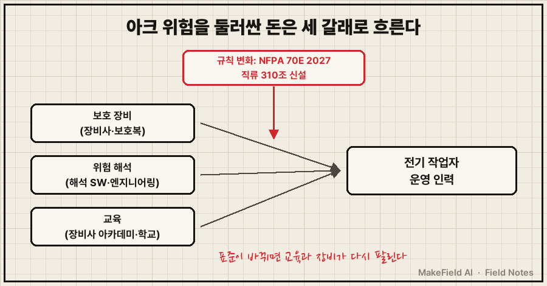

AI 데이터센터의 전기가 교류에서 800볼트 직류로 바뀌기 시작하면서, 전기 기술자의 오래된 위험 공식 하나가 다시 시험대에 올랐어요. 전기 사고 때 터지는 불꽃의 위험을 재는 계산이에요.
한 줄 요약: 아크 플래시는 전기 사고 때 공기 중으로 터지는 고열의 불꽃 폭발이고, 800V 직류 데이터센터에서는 그 위험을 교류 시대 공식이 아닌 새 방식으로 다시 계산해야 하는 상황이에요. 슈나이더 일렉트릭은 2026년 8월 연구에서 "보호 장치로 고장 시간을 제한하면 800V 직류의 아크 위험은 일반 교류 설비와 비슷한 수준"이라면서도, 이런 계통을 다루는 "업계 공통 표준은 아직 없다"고 밝혔어요(Techzine 2026-08, IT Brief 2026-08).
이 글은 2026년 10월 기준 공개 자료로 이 현상이 무엇인지, 왜 800V 직류에서 다시 문제가 되는지, 그 빈칸에 어떤 돈이 흐르는지 차례로 풀어 봅니다.
1. 아크 플래시란 무엇인가요
아크 플래시란 전기가 흐르는 도체 사이에서 고장이 나 전류가 공기를 뚫고 건너가며 순간적으로 빛과 열을 내뿜는 현상이다. 계측기 회사 Fluke는 아크 섬광 온도를 섭씨 2,800~19,000도로 설명해요(Fluke 코리아, 게시 연도 미표기). 작업자 화상의 대표 원인입니다.
💡 아크 플래시(아크 섬광) — 전기 사고 순간 공기 중으로 번쩍 튀는 고열의 불꽃 폭발. 용접 불꽃을 아주 크게, 한순간에 터뜨린 것이라고 생각하면 된다.
💡 아크 폭발 — 섬광 뒤에 따라오는 압력파. 빛과 열이 '섬광'이라면, 쾅 하고 밀어내는 힘이 '폭발'이다(Fluke 코리아).
위험의 크기는 '사고 에너지'라는 숫자로 매겨요.
💡 cal/cm²(칼로리 퍼 제곱센티미터) — 피부 1cm²가 받는 열에너지 단위. 업계는 1.2 cal/cm²를 화상 위험이 시작되는 보호구 기준선으로 쓴다.
미국에서는 작업장 전기안전 표준인 NFPA 70E가 이 계산과 보호구 기준을 정해요.
💡 NFPA 70E — 미국 방화협회(NFPA)가 만든 작업장 전기안전 표준. 감전·아크 플래시 위험 평가와 보호복 기준을 담는다. 한국 법령은 아니다.
2. 왜 800V 직류에서 아크 위험이 다시 문제가 되나요
AI 서버 전기가 415·480V 교류에서 800V 직류로 옮겨 가는데, 기존 아크 플래시 계산법과 현장 감각은 대부분 교류 기준으로 만들어졌기 때문이다. 데이터센터 신뢰성 평가 기관 업타임 연구소는 엔비디아의 2027년 플랫폼 Rubin Ultra가 800V 선반으로 출하될 예정이고, 데이터센터가 오늘날의 415V·480V 교류에서 800V 직류로 옮겨 갈 것으로 봤어요(업타임 연구소 2026-03).
💡 800V 직류 배전 — 데이터센터 안에서 전기를 교류 대신 800볼트 직류로 나눠 보내는 방식. 변환 단계를 줄여 손실을 낮춘다. 구조 자체는 이전 Next Field 글 '800V 직류 데이터센터란?'에서 다뤘다.
같은 기관은 "많은 전기 기술자가 저전압 환경은 본래 위험이 낮다고 가정한다"며, 이 때문에 위험이 과소평가될 수 있다고 짚었어요(업타임 연구소 2026-03).
직류가 까다로운 이유는 두 가지예요.

| 구분 | 교류(AC) | 800V 직류(DC) |
|---|---|---|
| 전류 0점 | 1초에도 여러 번 0을 지나 아크가 꺼질 기회가 있다 | 0점이 없어 아크가 저절로 꺼지지 않는다(Graceport) |
| 고장 초기 전류 | 전력망·변압기에서 계속 공급 | 첫 몇 밀리초는 커패시터 방전이 지배(Techzine 2026-08) |
| 계산 기준 | 수십 년 쌓인 교류 계산법 | 업계 공통 표준 없음(IT Brief 2026-08) |
💡 커패시터 — 전기를 잠깐 모았다가 한꺼번에 내보내는 부품. 직류 고장의 첫 순간 전류는 주로 여기서 나온다.
그림을 글로 정리하면, 교류는 전류가 계속 0을 지나며 아크가 꺼질 틈이 생기지만, 직류는 그런 틈이 없고 고장 첫 순간의 전류를 커패시터가 좌우해요. 그래서 교류용 공식을 그대로 쓰면 위험을 잘못 읽을 수 있습니다.
3. 슈나이더 연구는 무엇을 밝혔나요 — 위험은 생각보다 '관리 가능'
슈나이더 일렉트릭은 800V 직류 설계 두 가지를 비교해, 보호 장치로 고장 시간을 제한하면 아크 위험이 일반 교류 설비와 비슷하다고 결론 냈다. 연구 제목은 'DC arc flash analysis: a practical study on 800V AI data centers'예요(업타임 연구소 2026-09).
| 비교한 설계 | 보호 장치 없다고 가정 | 표준 보호 장치로 고장 시간 제한 |
|---|---|---|
| 선반 옆 전원 선반(사이드카) | 사고 에너지가 1.2 cal/cm² 기준선보다 충분히 낮음 | 교류 설비와 비슷한 수준 |
| 시설 단위 중앙 집중형 | 사이드카보다 조금 높음 | 교류 설비와 비슷한 수준 |
(출처: IT Brief 2026-08, Techzine 2026-08. 구체 에너지 값은 공개 보도에 나오지 않아 싣지 않았다.)
💡 사이드카(전원 선반) — 서버 선반 바로 옆에 붙여 두는 전원 전용 선반. 전기를 서버 가까이에서 바꿔 준다.
연구가 던진 더 큰 메시지는 계산법이에요. 단순화된 직류 계산법은 커패시터가 지배하는 계통에서 위험을 과대평가한다고 했고, 대신 시간에 따라 변하는 고장을 따라가는 과도 해석과 디지털 트윈(예: ETAP)이 더 정확하다고 권했어요(Techzine 2026-08).
💡 과도 해석 — 고장이 난 뒤 밀리초 단위로 전류·전압이 어떻게 변하는지 시간 순서대로 계산하는 방법. 사진 한 장이 아니라 동영상으로 사고를 보는 셈이다.
💡 디지털 트윈 — 실제 설비를 컴퓨터 안에 똑같이 옮겨 놓은 가상 모형. ETAP은 전력 계통 해석에 쓰는 대표 소프트웨어다.

4. 돈의 흐름 — 누가 사고 누가 파나요
이 위험을 둘러싼 돈은 보호 장비, 위험 해석, 교육 세 갈래로 흐르고, 세 갈래 모두에서 전력기기 대기업이 앞자리를 잡고 있다. 구조를 표로 정리하면 이래요.
| 갈래 | 사는 쪽 | 파는 쪽(예시) | 확인된 숫자 |
|---|---|---|---|
| 보호 장비·시스템 | 데이터센터 운영사, 공장, 전기공사 회사 | 슈나이더 일렉트릭, ABB, 지멘스, GE, 듀폰(보호복) | 세계 시장 2025년 32.5억 달러 → 2030년 39.9억 달러 전망, 연 4.18%(Mordor Intelligence 2026-10 조회) |
| 위험 해석 | 신축 데이터센터 설계 단계 | 해석 소프트웨어·엔지니어링 회사 | 800V 직류 공통 표준이 없어 과도 해석 수요(IT Brief 2026-08) |
| 교육 | 전기 기술자, 운영 인력 | 장비사 아카데미, 대학·폴리텍 | 미국 1일 공개과정 1인 300달러·정원 20명(East Central College 2026) |
💡 보호구(PPE) — 아크 열을 막는 방염 작업복·얼굴 가리개·장갑 같은 개인 보호 장비. 사고 에너지(cal/cm²)에 맞는 등급을 고른다.
시장조사 수치는 조사 기관마다 정의가 달라 단정하기 어렵다는 점을 덧붙여요. 위 수치는 한 기관(Mordor Intelligence) 기준의 추정치이고, 북미가 가장 크고 아시아·태평양이 가장 빨리 큰다고 봤습니다.
규칙도 돈을 움직여요. NFPA 70E 2027년판에는 '직류 전기 위험'을 다루는 310조가 새로 들어갔고, 전기이중층 커패시터를 다루는 370조, 보호구 자기 인증 폐지도 포함됐어요(Brainfiller 2026). 표준이 바뀌면 기업은 안전 프로그램·교육·보호구를 다시 맞춰야 하고, 그게 곧 교육과 장비 교체 수요가 됩니다.
💡 전기이중층 커패시터(슈퍼커패시터) — 일반 커패시터보다 훨씬 많은 전기를 저장하는 부품. AI 서버의 순간 전력 변동을 받아 주는 완충 장치로 쓰인다.

※ 위 기업명과 수치는 산업 구조를 설명하기 위한 예시입니다. 특정 종목의 매수·매도를 권하는 글이 아닙니다.
5. 누가 먼저 움직이나요 — 장비사와 학교
800V 직류 교육 자리는 독립 교육 업체보다 장비 회사와 학교가 손잡는 방식으로 먼저 채워지고 있다.
- 이튼–싱가포르 폴리텍(2026-08): 전력기기 회사 이튼과 싱가포르 폴리텍이 업무협약을 맺고, 800V 직류를 포함한 신전력 기술의 교육과정 개발·세미나·워크숍·실습 프로젝트·인턴십을 함께 하기로 했어요. 금액은 공개되지 않았습니다(TechNode Global 2026-08).
- 슈나이더 일렉트릭 아카데미(한국): 2007년 문을 열었고 2025년 2,000명 이상이 수강해 연간 최다를 기록했어요. 2026년에는 36개 과정을 열고 'DC솔루션-설계와 응용'을 연 2회 신설했습니다(냉난방공조신문 2026-02). 여기서 DC는 직류가 아니라 데이터센터(Data Center) 를 뜻해요. 기사에는 800V 직류 내용이 없습니다.
- LS일렉트릭–LG유플러스(2026-07): 800V 직류 기반 고전력 기술을 공동 검증하기로 협약했지만, 실증 장소·일정은 공개되지 않았어요(MTN 2026-07).
💡 MoU(업무협약) — 법적 구속력은 약한 '함께 하자'는 약속 문서.
2026년 10월 기준 공개 보도로는 국내에서 가동 중인 800V 직류 데이터센터나 800V 직류 전용 전기안전 교육 과정을 찾지 못했어요. 한국은 아직 '실증 협약' 단계입니다.
6. 언제 오나요, 한계는 무엇인가요
800V 직류의 아크 위험은 엔비디아 800V 선반 출하 예정 시점인 2027년 무렵부터 현장 문제가 되지만, 위험의 크기와 계산법을 두고 업계 의견이 아직 엇갈린다.
- '과대평가'와 '과소평가'가 부딪친다: 슈나이더는 단순 계산법이 위험을 부풀린다고 봤어요(Techzine 2026-08). 반면 안전장비 판매사 Graceport는 직류 전용 기준이 아직 자리 잡는 중이라 교류 기반 모델이 사고 에너지를 위험할 만큼 낮게 볼 수 있다고 적었습니다(Graceport, 게시 연도 미표기). 두 주장 모두 업계 당사자의 설명이라, 독립 표준이 나오기 전까지는 한쪽으로 단정하기 어려워요.
- 연구 원문이 공개 범위 밖이다: 슈나이더 연구의 구체 에너지 값은 보도에 나오지 않고, 업타임 연구소 해설도 본문 대부분이 유료예요.
- '위험'만으로 교육 수요가 커지진 않는다: 보호 장치만 갖추면 교류와 비슷하다는 결론은 '공포를 파는' 교육의 힘을 약하게 만들어요. 대신 정밀 해석처럼 전문성이 높은 영역으로 수요가 옮겨 갈 가능성이 큽니다(추정).
- 한국은 시차가 있다: 국내는 아직 실증 협약 단계라, 현장 수요가 본격화되는 시점은 해외보다 늦을 수 있어요(추정).
자주 묻는 질문
Q. 아크 플래시와 감전은 다른가요?
네. 감전은 전류가 몸을 통과해 생기는 사고이고, 아크 사고는 몸에 닿지 않아도 공기 중으로 터진 열과 빛에 다치는 사고예요. 아크 섬광 온도는 섭씨 2,800~19,000도로 설명됩니다(Fluke 코리아).
Q. 800V 직류는 교류보다 더 위험한가요?
설계와 보호 장치에 달려 있어요. 슈나이더 연구는 표준 보호 장치로 고장 시간을 제한하면 교류 설비와 비슷한 수준이라고 했지만(Techzine 2026-08), 이런 계통을 위한 업계 공통 표준은 아직 없어요(IT Brief 2026-08).
Q. NFPA 70E 2027년판에서 직류 관련해 바뀐 것은요?
'직류 전기 위험'을 다루는 310조와 전기이중층 커패시터를 다루는 370조가 새로 생겼어요(Brainfiller 2026). 다만 한국에서는 NFPA 70E가 법적 의무가 아니라 참고 기준입니다.
오늘의 용어 정리
- 아크 플래시(아크 섬광) — 전기 사고 순간 공기 중으로 터지는 고열의 빛과 열
- 아크 폭발 — 섬광 뒤에 오는 압력파
- cal/cm² — 피부가 받는 열에너지 단위, 1.2가 보호구 기준선
- NFPA 70E — 미국 작업장 전기안전 표준
- 800V 직류 배전 — 데이터센터 안을 800볼트 직류로 나눠 보내는 방식
- 커패시터 — 전기를 잠깐 모았다 한꺼번에 내보내는 부품
- 사이드카(전원 선반) — 서버 선반 옆에 붙인 전원 전용 선반
- 과도 해석 — 고장 뒤 밀리초 단위 변화를 시간 순서로 계산하는 방법
- 디지털 트윈 — 실제 설비를 옮긴 가상 모형
- 보호구(PPE) — 방염복·얼굴 가리개 같은 개인 보호 장비
- 전기이중층 커패시터 — 많은 전기를 저장하는 완충용 부품
- MoU — 구속력 약한 업무협약
지난 Next Field에서 800V 직류 데이터센터의 구조와 직류를 끊는 반도체 차단기를 봤다면, 오늘은 그 직류가 사람에게 얼마나 위험한지를 따라가 봤어요. 표준이 정해질 때 기준은 '과대평가' 쪽과 '과소평가' 쪽 중 어디에 더 가까워질까요?
출처
[1] Techzine(2026-08) — 슈나이더 일렉트릭 800V 직류 아크 위험 연구: 사이드카는 보호 장치 없이도 1.2 cal/cm² 기준선보다 충분히 낮음, 중앙 집중형은 조금 높음, 보호 장치로 고장 시간 제한 시 교류와 비슷, 첫 몇 밀리초는 커패시터 방전 지배, 단순 계산법은 과대평가, 과도 해석·디지털 트윈(ETAP) 권고
→ https://www.techzine.eu/news/infrastructure/143506/study-on-800v-dc-risks-comparable-to-conventional-ac/
[2] IT Brief(2026-08) — 같은 연구의 두 설계 비교와 "전력변환기가 공급하는 800V 직류 계통의 위험 관리 업계 표준은 아직 없다"는 결론
→ https://itbrief.co.uk/story/schneider-electric-studies-800-vdc-data-centre-arc-flash
[3] 업타임 연구소(2026-03) — 전기 기술자의 저전압 위험 과소평가 가능성, 415·480V 교류에서 800V 직류로 이동, 엔비디아 Rubin Ultra(2027) 800V 선반 출하 예정
→ https://intelligence.uptimeinstitute.com/resource/rising-densities-pose-hidden-risks-electricians
[4] 업타임 연구소(2026-09) — 슈나이더 연구 원제 'DC arc flash analysis: a practical study on 800V AI data centers' 소개
→ https://intelligence.uptimeinstitute.com/resource/study-arc-flash-analysis-800v-dc-systems
[5] Brainfiller(2026) — NFPA 70E 2027년판 주요 변경: 직류 전기 위험 310조 신설, 전기이중층 커패시터 370조 신설, 보호구 자기 인증 폐지
→ https://brainfiller.com/classes/2027-nfpa-70e-major-changes/
[6] Graceport(게시 연도 미표기) — 직류는 전류 0점이 없어 아크가 저절로 꺼지지 않음, 교류 기반 모델이 사고 에너지를 낮게 볼 수 있다는 판매사 측 주장
→ https://www.graceport.com/blog/800-vdc-is-coming-to-data-centers.-is-your-electrical-safety-program-ready
[7] Mordor Intelligence(2026-10 조회) — 세계 아크 플래시 보호 시장 2025년 32.5억 달러→2030년 39.9억 달러, 연 4.18%, 북미 최대·아시아태평양 최고 성장, 주요 기업 예시
→ https://www.mordorintelligence.com/industry-reports/arc-flash-protection-market
[8] East Central College(2026) — 미국 NFPA 70E 아크 플래시 1일 공개과정 2026-11-03 회차, 1인 300달러, 정원 20명
→ https://www.eastcentral.edu/cwd/?p=9080
[9] TechNode Global(2026-08) — 이튼–싱가포르 폴리텍 업무협약: 800V 직류 포함 교육과정 개발·세미나·워크숍·실습·인턴십, 금액 비공개
→ https://technode.global/2026/08/21/eaton-singapore-polytechnic-team-up-to-advance-talent-development-in-next-generation-power-infrastructure/
[10] 냉난방공조신문(2026-02) — 슈나이더 일렉트릭 아카데미 2007년 개설, 2025년 2,000명 이상 수강, 2026년 36개 과정, 'DC솔루션-설계와 응용' 연 2회 신설
→ https://www.kharn.kr/mobile/article.html?no=30007
[11] MTN(2026-07) — LS일렉트릭–LG유플러스 AI 데이터센터 직류 전력 협약, 800V 직류 고전력 기술 공동 검증, 실증 장소·일정 미공개
→ https://news.mtn.co.kr/news-detail/2026072209040887964
[12] Fluke 코리아(게시 연도 미표기) — 아크 섬광과 아크 폭발의 정의, 아크 섬광 온도 섭씨 2,800~19,000도
→ https://www.fluke.com/ko-kr/learn/blog/safety/아크-섬광-아크-폭발